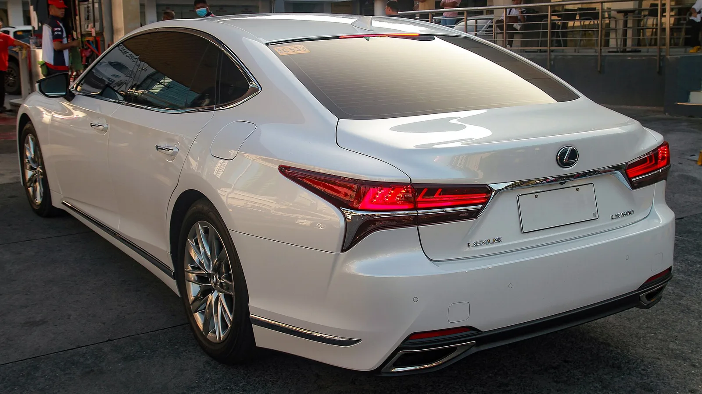
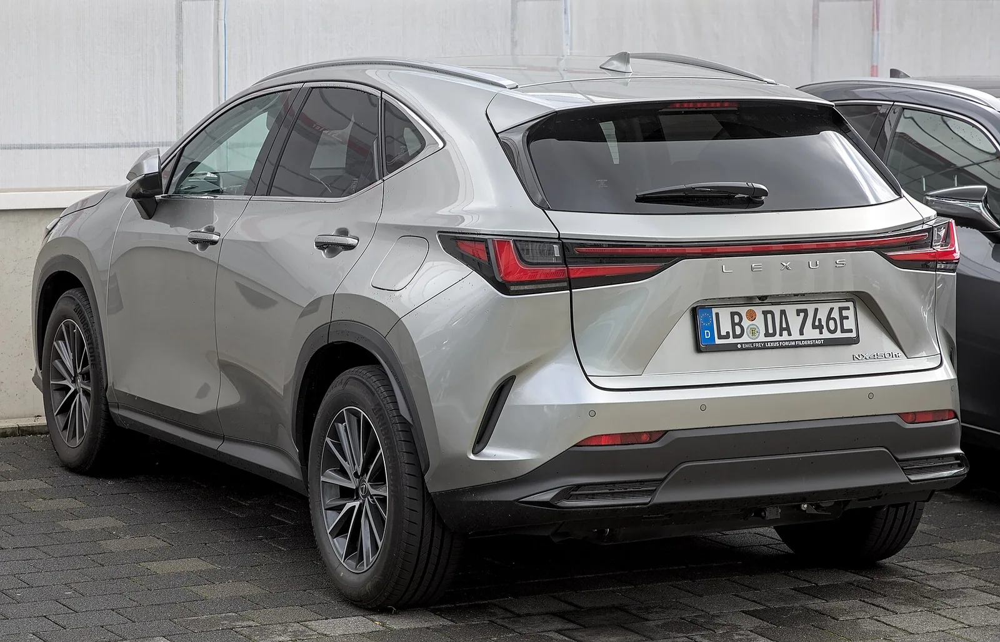

▲ LS500의 3.5L V6 트윈터보가 단종 목록에 올랐다 ⓒ Wikimedia Commons
렉서스가 순수 가솔린 모델을 하나씩 지우고 있습니다.
NX250은 6월에 단종이 발표됐습니다. 이어 NX350(2.4L 터보, 279마력)과 LS500(3.5L V6 트윈터보, 422마력)이 목록에 올랐습니다.
LS500이 빠지면 렉서스코리아가 파는 차는 전부 전동화 모델이 됩니다.
1. 무엇이 지워지나
| 모델 | 엔진 | 출력 | 상태 |
|---|---|---|---|
| NX250 | 2.5L 자연흡기 | — | 6월 단종 발표 |
| NX350 | 2.4L 터보 | 279마력 | 단종 예정 |
| LS500 | 3.5L V6 트윈터보 | 422마력 | 단종 예정 |
세 모델의 성격이 다릅니다. NX250은 보급형 진입 엔진, NX350은 성능형, LS500은 플래그십 세단의 주력입니다.
공통점은 하나입니다. 전기가 섞이지 않은 순수 내연기관이라는 것입니다.
2. LS500이 갖는 무게
LS는 렉서스를 만든 차입니다. 1989년 LS400이 나오면서 브랜드가 시작됐습니다.
3.5리터 V6 트윈터보 422마력은 지금 기준으로도 강력합니다. 그럼에도 지워지는 이유는 판매량입니다. 대형 럭셔리 세단 수요 자체가 전 세계에서 줄고 있습니다.
| 구분 | 내용 |
|---|---|
| LS500 | 3.5L V6 트윈터보 — 단종 예정 |
| LS500h | 3.5L V6 하이브리드 — 유지 |
즉 LS 자체가 사라지는 것이 아니라 파워트레인이 하나로 좁혀집니다. 구매자에게는 선택지가 줄어드는 것이고, 제조사에게는 인증·재고 비용이 줄어드는 것입니다.

▲ LS는 1989년 LS400으로 렉서스 브랜드를 시작한 모델이다
3. 국내에서 벌어질 일
NX250과 NX350은 국내에 들어오지 않았습니다. 국내 NX는 하이브리드(NX350h)와 플러그인 하이브리드(NX450h+) 중심으로 운영돼 왔습니다.
그래서 국내에 직접 영향을 주는 것은 LS500입니다.
| 구분 | 남는 모델 |
|---|---|
| 하이브리드 | ES300h, NX350h, RX350h, LS500h 등 |
| 플러그인 하이브리드 | NX450h+, RX450h+ 등 |
| 순수 전기 | RZ 등 — 시기별 판매 모델은 렉서스코리아 확인 필요 |
| 순수 가솔린 | 사라진다 |
렉서스코리아는 이미 하이브리드 비중이 압도적입니다. LS500이 빠져도 판매 구조에 큰 변화는 없습니다. 다만 "렉서스에는 가솔린이 없다"는 상태가 공식화된다는 점에서 상징적입니다.
4. 왜 이렇게 하나
| 영역 | 내용 |
|---|---|
| 인증 | 배출가스·연비 인증을 엔진 종류마다 따로 받아야 한다 |
| 생산 | 같은 라인에서 여러 파워트레인을 섞으면 공정이 복잡해진다 |
| 부품 | 공급망과 재고를 이중으로 유지해야 한다 |
| 규제 | 유럽·중국의 평균 배출량 기준에서 순수 내연기관이 불리하다 |
| 개발 | 남은 예산을 전동화에 집중할 수 있다 |
네 번째 항목이 구조적 압력입니다. 제조사별 평균 배출량 규제에서는 잘 팔리지 않는 고배기량 모델 하나가 전체 평균을 끌어올립니다. 판매량이 적을수록 유지할 명분이 약해집니다.

▲ NX350의 2.4리터 터보 279마력도 단종 목록에 있다
5. 그래도 남는 내연기관
| 모델 | 성격 |
|---|---|
| RX350 | 중형 SUV — 볼륨 모델 |
| LX600 | 대형 오프로더 — 랜드크루저 기반 |
| GX550 | 중대형 오프로더 |
남는 셋 중 둘이 본격 오프로더입니다. LX600과 GX550은 래더프레임 구조로, 하이브리드화가 상대적으로 어렵고 사용 환경상 충전 인프라를 기대하기도 힘듭니다.
즉 렉서스의 정리 방향은 "전부 전동화"가 아니라 "전동화가 통하는 곳부터"에 가깝습니다. 도심형 세단과 SUV가 먼저 넘어가고, 오프로더는 남습니다.

▲ 국내 NX는 하이브리드와 플러그인 하이브리드 중심으로 운영돼 왔다
6. 정리
렉서스가 순수 가솔린 모델을 순차 단종합니다. NX250은 6월에 발표됐고, NX350(2.4L 터보, 279마력)과 LS500(3.5L V6 트윈터보, 422마력)이 뒤를 잇습니다.
남는 것은 순수 전기와 하이브리드뿐이며, 글로벌 기준으로 RX350·LX600·GX550 정도만 순수 내연기관으로 남습니다. 일본 내수부터 시작해 글로벌로 확대될 전망이고 구체 일정은 공개되지 않았습니다.
국내에서는 LS500이 관건입니다. NX250·NX350은 애초에 국내 미출시라 영향이 없지만, LS500이 빠지면 렉서스코리아 전 라인업이 전동화 모델만 남게 됩니다.